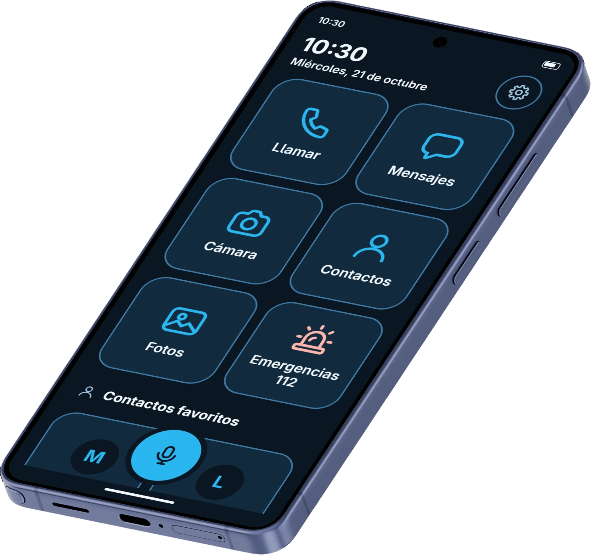
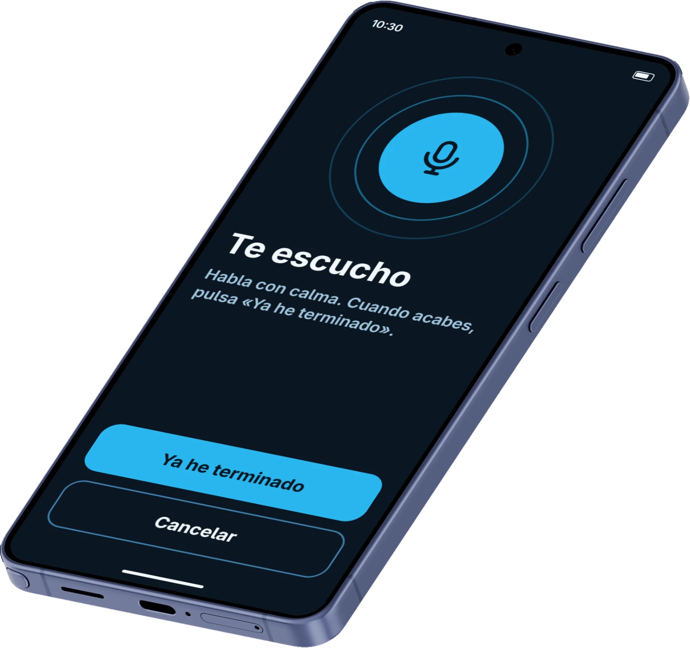
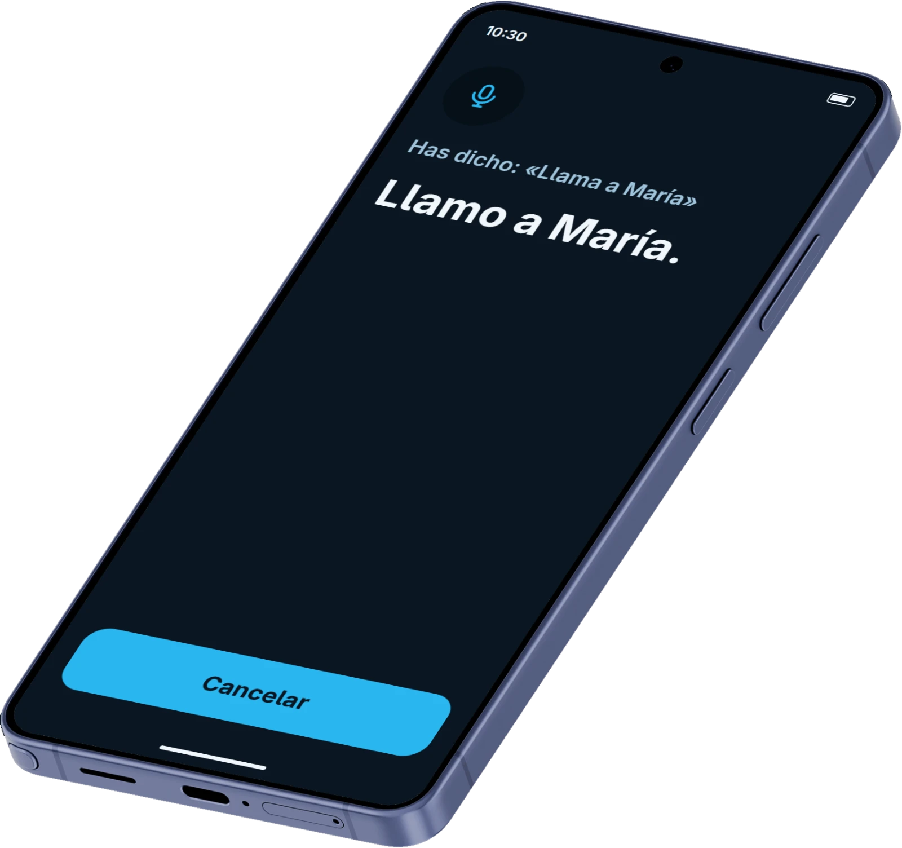
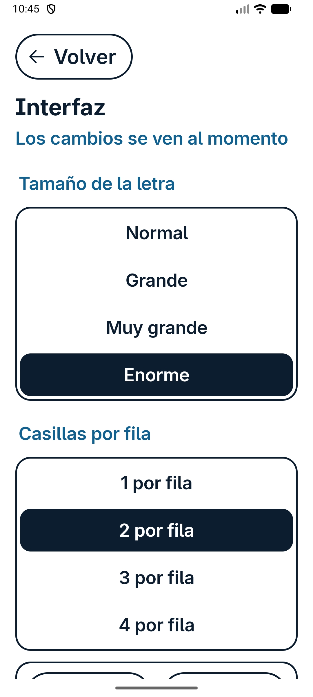
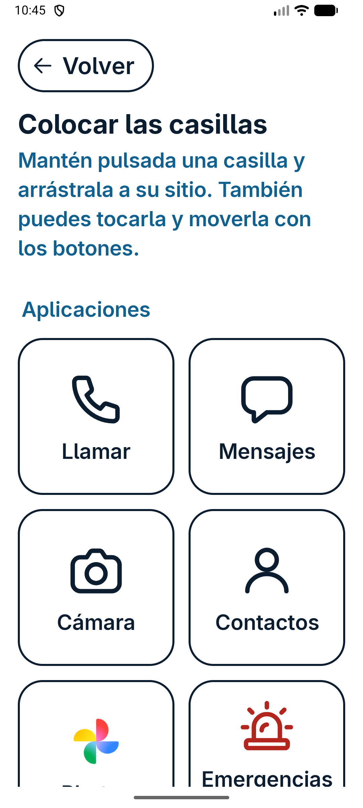
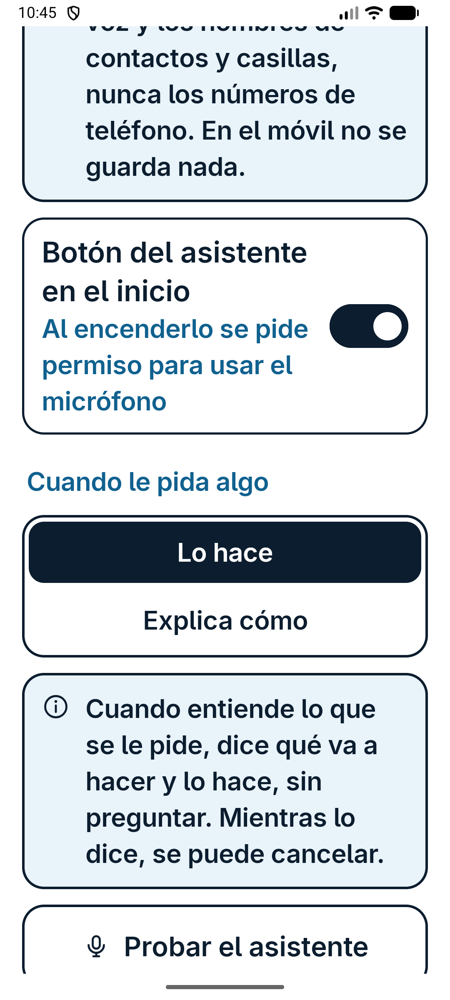

Una app para tus mayores
Que tus mayores vuelvan a usar su móvil.
Doado cambia la pantalla de inicio de cualquier Android por una que se entiende a la primera. Casillas grandes que no se mueven y sus contactos favoritos a un toque.



- «Llama a mi hija»
- «Abre el WhatsApp de Luis»
- «¿Cómo hago una foto?»
- «Abre la cámara»
- «Llama a mi nieto»
- «¿Cómo subo el volumen?»
- «María»
Por qué Doado
El problema no son tus mayores.
Es una pantalla llena de iconos diminutos que cambian de sitio sin avisar. Doado quita lo que sobra y deja lo de cada día: grande, quieto y siempre en el mismo sitio.
Lo que cambia en su día a día.
Llama a quien quiere, sin ayuda.
Sus contactos favoritos están en el inicio, con su nombre y su foto. Un toque y llama a María o abre el WhatsApp de Luis.
Encuentra cada cosa donde la dejó.
Las casillas son cuadradas y no se mueven. Si una app desaparece, su casilla se queda en su sitio, apagada, con contorno a trazos y su aviso.
Lee sin esforzarse.
Cuatro tamaños de letra, contraste de 7 a 1 y una letra en la que la I y la l no se confunden.
Tiene el 112 a un toque.
Si la enciendes, la casilla «Emergencias 112» abre el teléfono con el número ya puesto. La llamada se hace con el botón verde de llamar: así no se llama sin querer.
Asistente de voz
En pruebasLo pide hablando. Doado lo dice y lo hace.
Un círculo grande, abajo en el centro. Lo pulsa, habla como siempre, y Doado llama, abre WhatsApp o le explica paso a paso cómo hacer algo.
-
Dice lo que va a hacer, y se puede parar.«Llamo a María.» Mientras lo dice, tiene un botón grande de «Cancelar».
-
No adivina.Si duda entre dos personas, pregunta con un botón para cada una. Si no ha entendido, pide que se lo repitan. Lo que dice en voz alta, también lo escribe.
-
O te lo explica.Si lo eliges, en vez de hacerlo da los pasos de uno en uno, con botones, y al acabar marca en el inicio la casilla que hay que pulsar.
-
Oye a quien habla, no a la casa.Nota cuándo has acabado la frase, y lo que suena más flojo, como la tele, no cuenta. Mientras escucha, el micrófono late con tu voz.
-
Sus números no salen del móvil.Al servicio de voz le llegan la voz de la orden y los nombres. Nunca un número de teléfono.
10:30
miércoles, 21 de octubre
Contactos favoritos
Para el familiar
Tú lo configuras una vez. Tus mayores solo tienen que usarlo.
Eliges sus apps, sus contactos favoritos, la letra y cómo le ayuda el asistente.




Sus contactos favoritos
Los eliges de la agenda, uno a uno, con su botón de llamar, de WhatsApp o los dos. Con tu permiso, salen con la foto que tienen en la agenda.
Cada casilla en su sitio
En «Colocar las casillas» las mueves arrastrándolas o con botones. Nada cambia de sitio solo: solo tú decides dónde va cada una.
Su letra, su tema y su fondo
Cuatro tamaños de letra, de una a cuatro casillas por fila, siempre cuadradas, claro u oscuro, reloj y una foto de fondo.
Su asistente
Lo enciendes y eliges: «Lo hace», el de fábrica, o «Explica cómo». Y lo puedes probar antes de devolverle el móvil.
Su PIN
Cuatro cifras guardadas de forma segura y, si quieres, una pregunta por si un día se olvidan.
Quince minutos para Android
El modo administrador abre la tienda y los ajustes del sistema, con cuenta atrás, y se cierra solo.
Normas
La accesibilidad manda sobre la estética. Siempre.
No es una capa que se añade al final. Cada pantalla de Doado se mide antes de darse por buena.
7 a 1
El contraste que buscamos en textos y bordes. El mínimo habitual es 4,5:1.
70 dp
Lo que mide la casilla más pequeña, con cuatro por fila. Android se conforma con 48.
4
Tamaños de letra. Un nombre largo baja de tamaño antes que partir una palabra.
0
Colores que dependan del fondo de pantalla. Así el contraste no se rompe nunca.
Separa por bordes, no por sombras, porque una sombra suave desaparece para quien distingue poco el contraste.
Sin letra pequeña
Lo que Doado no hace.
Preferimos que lo sepas antes de instalarlo.
No te pide cuentas.
Ni a ti ni a tus mayores. No hay registro ni anuncios.
No mira qué hace.
Sin servidor propio y sin analítica. No sabemos cuándo lo usa ni para qué.
No lee toda la agenda.
Solo ve los contactos que eliges tú, uno a uno, y con tu permiso, su foto.
No encierra el móvil.
Cierra las salidas de Doado, que son por donde se sale en la práctica. Bloquear Android entero exigiría controlar el dispositivo, y eso no lo hacemos.
Cómo se pone en marcha
Una tarde para ti. Todos los días para tus mayores.
Lo configuras una vez, con calma, y le devuelves el móvil. A partir de ahí, su inicio deja de cambiar.
Instala Doado en su móvil.
Vale cualquier Android 7 o posterior, de cualquier marca. Hoy se instala con el APK de prueba.
Elige Doado como inicio.
Pulsa el botón de Inicio: Android pregunta qué pantalla usar. Elige Doado y después «Siempre».
Ponle tu PIN y sus cosas.
Crea las cuatro cifras y elige sus casillas, sus contactos favoritos, la letra y cómo le ayuda el asistente.
Devuélvele el móvil.
Si un día hay que instalar algo, el modo administrador te abre Android quince minutos y se vuelve a cerrar solo.
Preguntas frecuentes
Lo que nos suelen preguntar.
Y si tu duda no está aquí, puede que la resuelva el móvil de prueba: tócalo.
¿Dónde lo descargo?
Todavía no está en Google Play: la pantalla de inicio está terminada y el asistente de voz, en pruebas. Hoy se instala con el APK de prueba.
¿Sirve para cualquier móvil?
Para cualquier Android 7 o posterior, de cualquier marca: las casillas buscan la app de llamar o de mensajes que tenga cada móvil. Para iPhone, no.
¿Y si toca algo y lo desconfigura?
Todo lo que cambia algo está detrás de tu PIN, y lo que ella ve no se mueve de sitio. Si un día prefieres el inicio de antes, se cambia en un minuto desde el modo administrador.
¿Puede salirse de Doado?
Doado cierra sus propias salidas a Android y solo las abre el modo administrador, durante quince minutos. No bloquea el móvil entero: para eso tendría que controlar el dispositivo, y no lo hace.
¿Qué oye el asistente?
Solo escucha cuando se pulsa el círculo. Para entender la orden, la voz viaja a un servicio externo, al que solo le llegan la voz y los nombres, nunca un número de teléfono. En el móvil no se guarda nada.
¿Qué permisos pide?
El de llamar, el del micrófono para el asistente y, si lo aceptas, el de contactos, que solo se usa para enseñar la foto de quienes guardas en Doado.
¿Necesita internet?
El inicio, no. El asistente de voz, sí.
¿Y si se me olvida el PIN?
Al crearlo puedes poner una pregunta de recuperación. Sin ella, la única salida es borrar los datos de Doado y volver a configurarlo.
Testimonios
Lo que cuentan las familias que lo prueban.
Provisional: testimonios de ejemplo, no son reales.
«Mi madre llevaba meses sin llamarme por su cuenta. La primera semana con Doado me llamó tres veces, y una era solo para decirme que ya sabía hacerlo.»
«Antes cada visita era arreglarle el móvil. Ahora voy a verle a él.»
«Le dice al círculo "llama a mi nieta" y el móvil le contesta «Llamo a Lucía». Eso le da mucha tranquilidad.»
doadoadj.En gallego, sencillo. Fácil de hacer.
Empieza por el móvil de quien más te llama.
Sin cuentas y sin anuncios. Una tarde de ajustes y su pantalla de inicio deja de cambiar.
- Pantalla de inicio: terminada
- Asistente de voz: en pruebas